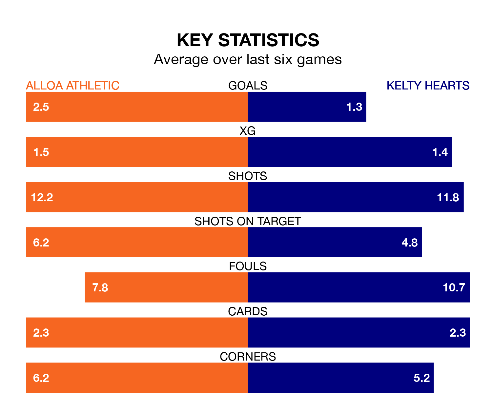

Alloa Athletic host Kelty Hearts in Saturday's match at the Indodrill Stadium looking to bounce back from defeat last time out in League One.
Alloa, who sit fourth in the league after 26 games, fell to a 4-3 away defeat to Montrose on March 2.
They face a Kelty Hearts side who also lost their last match, a 5-0 defeat to Hamilton Academical, and who sit sixth in the table.
In the last 10 years, Alloa and Kelty Hearts have played each other on six occasions. Alloa won three of them, Kelty Hearts one, and they drew twice.
On average, Alloa scored 1.5 goals and Kelty Hearts 0.8 in those matches.
Their last meeting was on October 21, when Alloa won 3-1 at home.
With 35 goals in 26 games so far this season, Kelty Hearts are scoring at below the league average rate with 1.3 goals per game. And they are conceding more than average, letting in 45 goals at a rate of 1.7 per game.
Alloa are also below average scorers, with 1.5 goals per game, compared to a league average of 1.6. They have conceded 1.6 goals per game.
Athletic are in fantastic form in League One, with five wins and one loss from their last six games.
With two wins and a draw over that period, the away team's form is much worse – they have taken seven points from 18, compared to the hosts' 15.
In Bobby Wales, Alloa have one of the league's most on-form strikers so far this season. He has notched eight goals in 18 appearances, to sit fifth in the scoring charts.
His goal rate of one every 194 minutes is slightly quicker than that of Alfie Bavidge, Kelty Hearts's top scorer with a goal every 210 minutes, and a total of seven goals in 17 games.
Saturday's match will be refereed by Grant Irvine, who is taking charge of his first League One game this season.
He is yet to oversee a match featuring either Alloa or Kelty Hearts this season.
Updated: 09:34 (UTC), 08/03/24